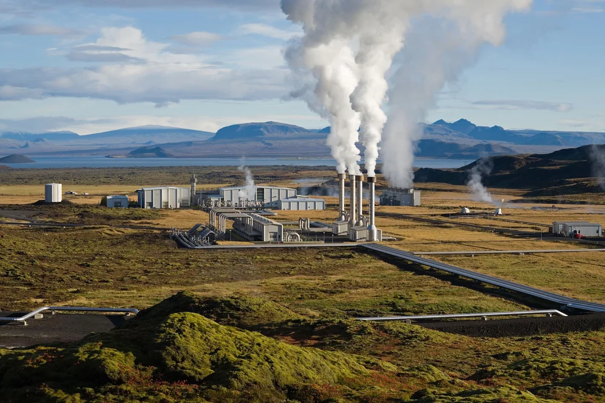
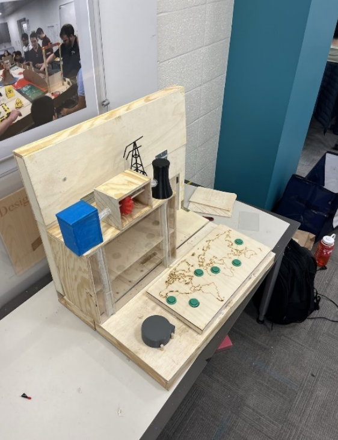
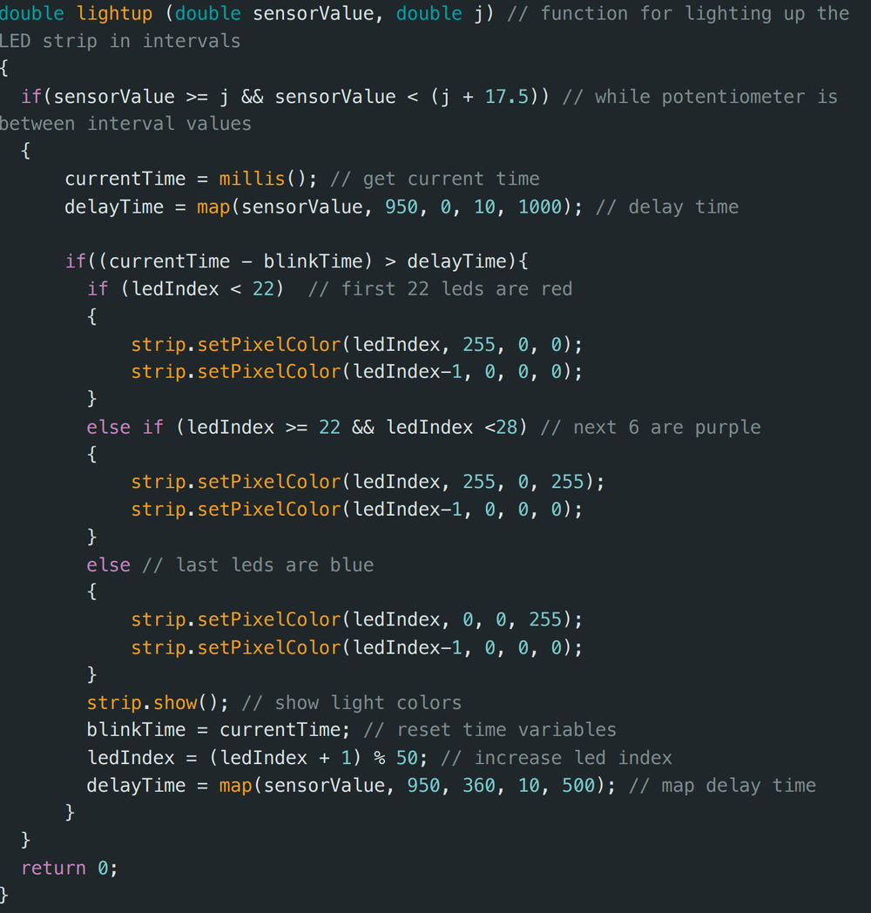
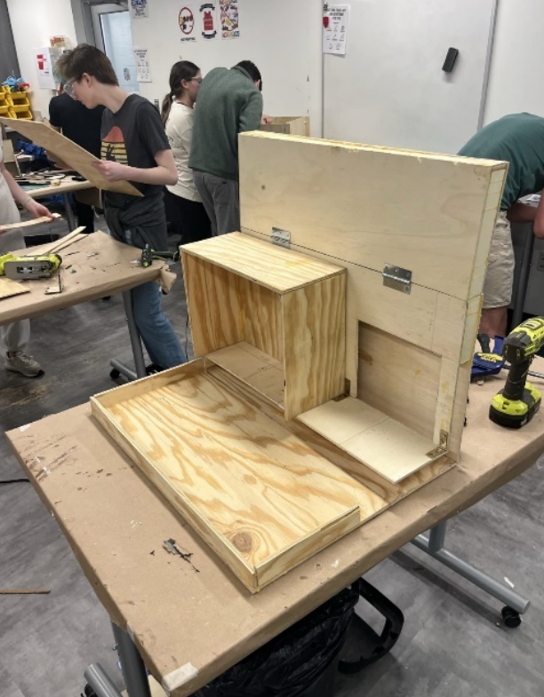
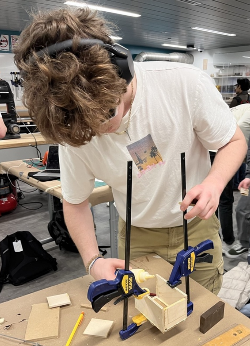
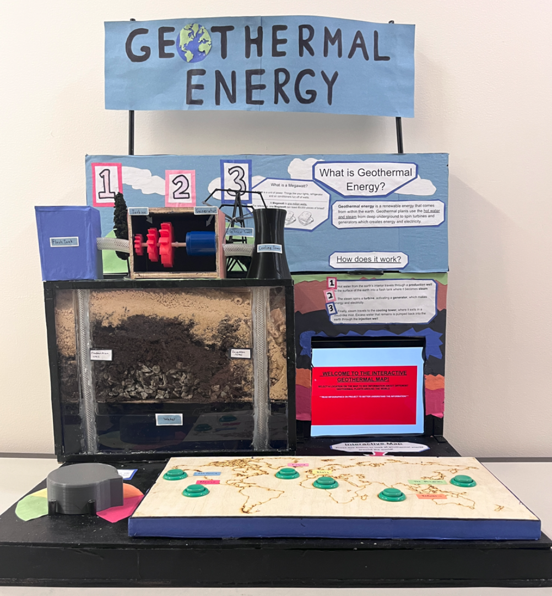

Geothermal Energy Museum Exhibit
Overview
For my Cornerstone engineering project, I worked on a team of four to design and build a portable museum exhibit that teaches elementary school students how geothermal energy works. The exhibit was presented to kids at an engineering expo, where they could interact with it hands-on. I served as rotating project lead, handled all of the programming, did most of the CAD work, and shared manufacturing responsibilities equally with the team. As project lead, I presented progress updates to the class and wrote a formal project memo.


The Exhibit
The exhibit had two interactive components. The first was a physical breakdown of a geothermal system with LEDs representing the flow of steam and water through the cycle. Visitors could turn a dial to adjust the rate of steam generation, which changed the LED animation speed in real time. The second component was a laser-carved world map with push buttons at the locations of real geothermal power plants. Pressing a button would bring up information about that plant on a connected display, letting kids explore where geothermal energy is actually being used around the world.
Design and Programming
I modeled the exhibit housing and internal layout in SolidWorks, designing around the constraints of portability (it needed to be carried to the expo), durability (elementary schoolers would be using it), and ease of assembly. On the programming side, I wrote the code in C++ to run an Arduino-based control system that handled both the LED lighting sequences for the geothermal model and the interactive map display. A separate MATLAB script drove the slideshow component of the display.

Manufacturing and Assembly
The exhibit was built from wood, acrylic, and internal wiring, all cut and assembled by hand. The laser-carved map was one of the more involved fabrication pieces, requiring precise alignment of the button cutouts with the engraved plant locations. The Arduino and wiring were integrated into the housing so that all electronics were concealed and protected during transport and use.


Results
The finished exhibit was presented at the engineering expo to elementary school students, who interacted with both the steam generation dial and the world map buttons. The exhibit successfully held kids' attention and communicated the basics of how geothermal energy is captured and where it's used globally.
